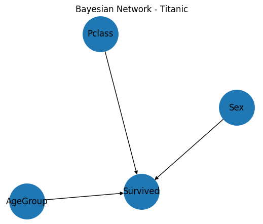

# Importar librerías
import pandas as pd
import numpy as np
import networkx as nx
import matplotlib.pyplot as plt
from pgmpy.models import DiscreteBayesianNetwork
from pgmpy.estimators import MaximumLikelihoodEstimator #pgmpy 1.1.2
from pgmpy.inference import VariableEliminationGraphical Models
Un Graphical Model (Modelo Gráfico) es una forma de representar una distribución de probabilidad compleja usando un grafo, donde:
- Nodos: variables aleatorias.
- Aristas (conexiones): dependencias probabilísticas entre esas variables.
En lugar de modelar directamente una distribución conjunta compleja, un graphical model permite descomponer la distribución en factores más simples
Por ejemplo:
\[\text{Publicidad}\rightarrow\text{Click}\rightarrow\text{Compra}\]
Se puede interpretar:
- La publicidad está relacionada con hacer click en un anuncio.
- Hacer click en un anuncio está relacionada con hacer una compra.
Esto induce la siguiente descomposición:
\[P(P_{ublicidad},C_{lick},C_{ompra})=P(P_{ublicidad})P(C_{lick}|P_{ublicidad})P(C_{ompra}|C_{lick})\]
1. Librerías
2. Dataset
Generaremos un dataset sobre el Titanic:
# Importar dataset
dataset = pd.read_csv("https://raw.githubusercontent.com/datasciencedojo/datasets/master/titanic.csv")
# Procesar dataset
dataset['Sex'] = dataset['Sex'].map({'male': 0, 'female': 1})
dataset['AgeGroup'] = pd.cut(dataset['Age'], bins=[0, 18, 60, 100], labels=[0, 1, 2])
dataset['Pclass'] = dataset['Pclass'].astype('category')
dataset = dataset.dropna()
# Seleccionar variables relevantes
dataset = dataset[['Sex', 'AgeGroup', 'Pclass', 'Survived']]
dataset.head()| Sex | AgeGroup | Pclass | Survived | |
|---|---|---|---|---|
| 1 | 1 | 1 | 1 | 1 |
| 3 | 1 | 1 | 1 | 1 |
| 6 | 0 | 1 | 1 | 0 |
| 10 | 1 | 0 | 3 | 1 |
| 11 | 1 | 1 | 1 | 1 |
Podemos ver que cada fila del dataset representa un pasajero del Titanic y contiene distintas variables sobre cada persona, por ejemplo:
- Sex: sexo.
- AgeGroup: grupo de edad.
- Pclass: clase del ticket.
- Survived:: indica si el pasajero sobrevivió o no.
2.1 Exploración de datos
Establecemos la distribución base del fenómeno obteniendo la probabilidad global de sobrevivir.
# Calcular probabilidad global de sobrevivir
dataset['Survived'].value_counts(normalize=True)Survived
1 0.672131
0 0.327869
Name: proportion, dtype: float643. Modelo gráfico
# Crear modelo gráfico
modeloGrafico = nx.DiGraph()
# Añadir nodos y aristas al modelo gráfico
modeloGrafico.add_edges_from([
("Pclass", "Survived"),
("Sex", "Survived"),
("AgeGroup", "Survived")
])
# Visualizar modelo gráfico
plt.figure(figsize=(5,4))
nx.draw(modeloGrafico, with_labels=True, node_size=2500)
plt.title("Bayesian Network - Titanic")
plt.show()
4. Probabilidades
4.1 Probabilidades condicionales
Podemos estimar cómo observando el cambio de una variable cambia la probabilidad de otra variable calculando probabilidades condicionales.
\[P(\text{Survived}|\text{Sex})\]
# Probabilidad de supervivencia según sexo
dataset.groupby('Sex')['Survived'].mean()Sex
0 0.431579
1 0.931818
Name: Survived, dtype: float64\[P(\text{Survived}|\text{Pclass})\]
# Probabilidad de supervivencia según clase del ticket
dataset.groupby('Pclass')['Survived'].mean()C:\Users\wang-eva\AppData\Local\Temp\ipykernel_20684\2352401549.py:2: FutureWarning: The default of observed=False is deprecated and will be changed to True in a future version of pandas. Pass observed=False to retain current behavior or observed=True to adopt the future default and silence this warning.
dataset.groupby('Pclass')['Survived'].mean()Pclass
1 0.670886
2 0.800000
3 0.500000
Name: Survived, dtype: float644.2 Inferencia conjunta
Luego podemos realizar inferencia conjunta para estimar probabilidades tras observar evidencia.
\[P(\text{Survived}|\text{Sex},\text{Pclass})\]
dataset[(dataset['Sex'] == 1) & (dataset['Pclass'] == 1)]['Survived'].mean()np.float64(0.9594594594594594)El modelo combina información de múltiples variables.
5. Red Bayesiana
Una Red Bayesiana (Bayesian Network) es un tipo específico de modelo gráfico. Particularmente, es un modelo gráfico probabilístico dirigido que utiliza la estructura del modelo gráfico y los datos para aprender probabilidades condicionales.
La estructura del grafo corresponde a un DAG (Directed Acyclic Graph), es decir:
- Directed: las conexiones tienen dirección.
- Acyclic: no existen ciclos.
redBayesiana = DiscreteBayesianNetwork([
('Pclass', 'Survived'),
('Sex', 'Survived'),
('AgeGroup', 'Survived')
])5.1 Entrenamiento
El modelo estima probabilidades usando frecuencias observadas en los datos.
Creamos un estimador que observa el dataset y aprende probabilidades condicionales para cada nodo. En particular, busca las probabilidades que hacen que los datos observados sean lo más probables posible.
# Crear un estimador de Máxima Verosimilitud (MLE)
mle = MaximumLikelihoodEstimator(redBayesiana, dataset)Luego, obtenemos las probabilidades condicionales aprendidas en una Conditional Probability Distribution (CPD), una tabla que almacena las probabilidades de una variable considerando las variables de las que depende en el grafo.
# Obtener CPDs aprendidas desde los datos
cpds = mle.get_parameters()
# Añadir las probabilidades aprendidas a la red bayesiana
redBayesiana.add_cpds(*cpds)
for cpd in redBayesiana.get_cpds():
print(cpd)
print()+-----------+-----------+
| Pclass(1) | 0.863388 |
+-----------+-----------+
| Pclass(2) | 0.0819672 |
+-----------+-----------+
| Pclass(3) | 0.0546448 |
+-----------+-----------+
+-------------+-------------+-----+-------------+-------------+
| AgeGroup | AgeGroup(0) | ... | AgeGroup(2) | AgeGroup(2) |
+-------------+-------------+-----+-------------+-------------+
| Pclass | Pclass(1) | ... | Pclass(3) | Pclass(3) |
+-------------+-------------+-----+-------------+-------------+
| Sex | Sex(0) | ... | Sex(0) | Sex(1) |
+-------------+-------------+-----+-------------+-------------+
| Survived(0) | 0.2 | ... | 0.5 | 0.5 |
+-------------+-------------+-----+-------------+-------------+
| Survived(1) | 0.8 | ... | 0.5 | 0.5 |
+-------------+-------------+-----+-------------+-------------+
+--------+----------+
| Sex(0) | 0.519126 |
+--------+----------+
| Sex(1) | 0.480874 |
+--------+----------+
+-------------+-----------+
| AgeGroup(0) | 0.125683 |
+-------------+-----------+
| AgeGroup(1) | 0.819672 |
+-------------+-----------+
| AgeGroup(2) | 0.0546448 |
+-------------+-----------+
Al añadir las probabilidades condicionales a la Red Bayesiana, ahora puede:
- calcular probabilidades,
- responder consultas,
- hacer inferencia probabilística.
6.2 Motor de inferencia
El motor de inferencia es el componente que permite usar la red bayesiana para responder preguntas probabilísticas. La idea principal es usar las probabilidades aprendidas y la estructura del grafo para calcular probabilidades desconocidas.
# Crear motor de inferencia
inference = VariableElimination(redBayesiana)# Realizar una consulta: ¿Cuál es la probabilidad de sobrevivir dado que Sex = 1 y Pclass = 1?
query = inference.query(
variables=['Survived'],
evidence={
'Sex': 1,
'Pclass': 1
}
)
print(query)+-------------+-----------------+
| Survived | phi(Survived) |
+=============+=================+
| Survived(0) | 0.0379 |
+-------------+-----------------+
| Survived(1) | 0.9621 |
+-------------+-----------------+